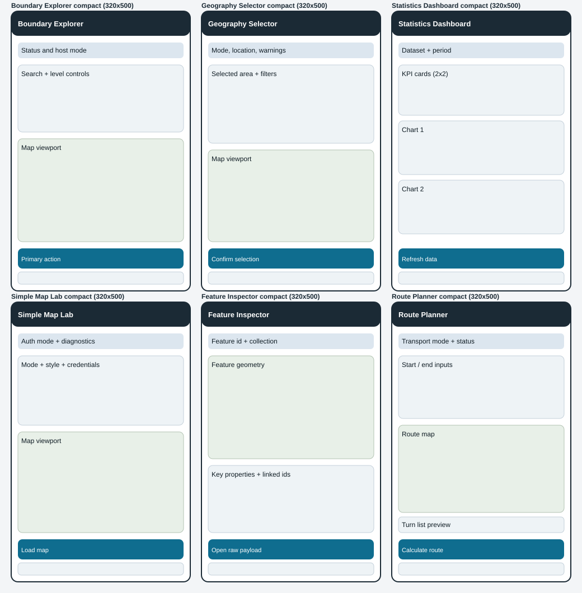

MCP Geo Compact UI Proposals
Proposed redesign baseline for MCP-Apps UIs constrained by host inline windows.
Wireframe Frames (Import-ready)
Each frame keeps title, status, map/visual viewport, and primary action visible in constrained inline layouts.

Compact Tokens
Spacing
4 / 8 / 12 / 16 / 20
Type scale
12 (meta), 14 (body), 16 (section), 18 (title)
Targets
40px min tap height; 12px min internal padding
Map viewport
150px to 190px in 320x500 frame
Primary action
Dock near bottom; one clear CTA only
Diagnostics
Plain-language status strip directly under header